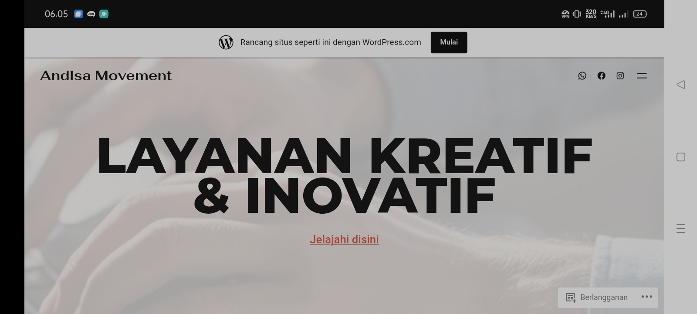
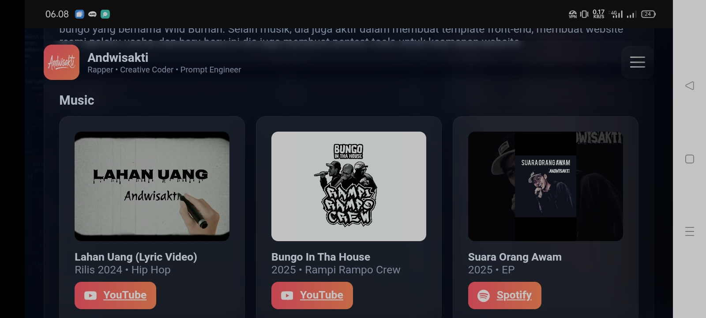
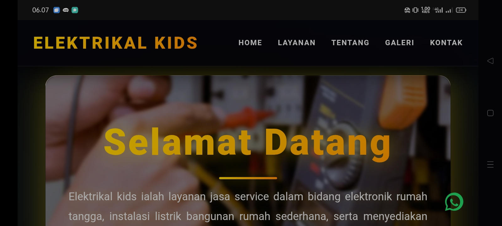
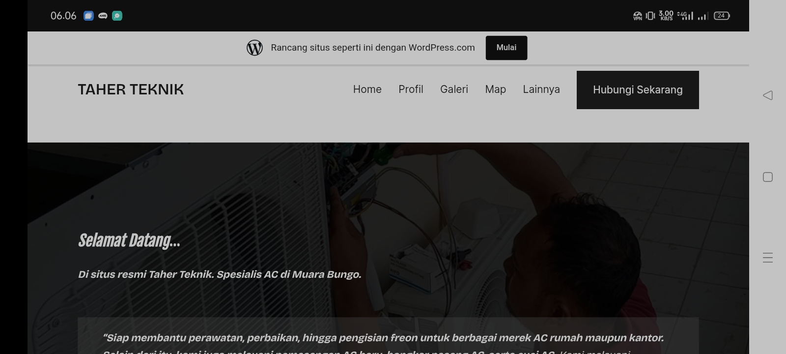
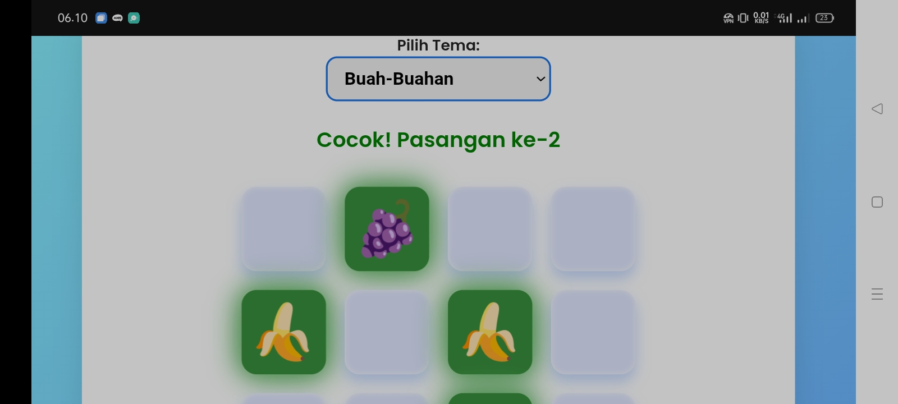

Karya & Proyek yang Telah Diselesaikan
Lihat berbagai website dan solusi digital yang telah kami kembangkan untuk UMKM dan bisnis di Kabupaten Bungo.

WordPressWebsite untuk jasa layanan teknologi/digital, berupa desain logo, dan lainnya.

SEO + StaticWebsite statis untuk menampilkan karya dari Andwisakti.

SEO + StaticWebsite informasi service elektronik rumah tangga dengan optimasi SEO untuk muncul di halaman pertama Google.

WordPress + SEOWebsite jasa service AC dengan sistem terintegrasi dengan WhatsApp dan media sosial lainnya.

Static WebsiteGame mencocokkan gambar dengan beberapa tema pilihan, serta musik tambahan supaya lebih menarik.
Proyek Selesai
Klien Puas
Website Statis
Website WordPress
Apa kata mereka tentang kerja sama dengan DI Bungo
"Website yang dibuat oleh DI Bungo sangat membantu bisnis lokal dalam menghadapi perkembangan teknologi yang begitu pesat."
"DI Bungo memberikan solusi website yang terjangkau namun tetap berkualitas."
"Sangat recommended untuk bisnis lokal!"
Bergabunglah dengan bisnis lokal yang telah mempercayakan pembuatan website mereka kepada DI Bungo.